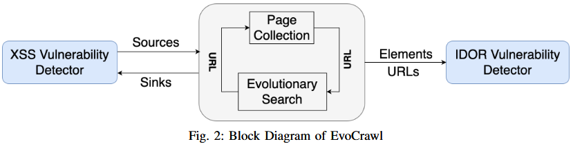
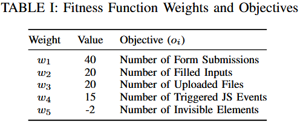
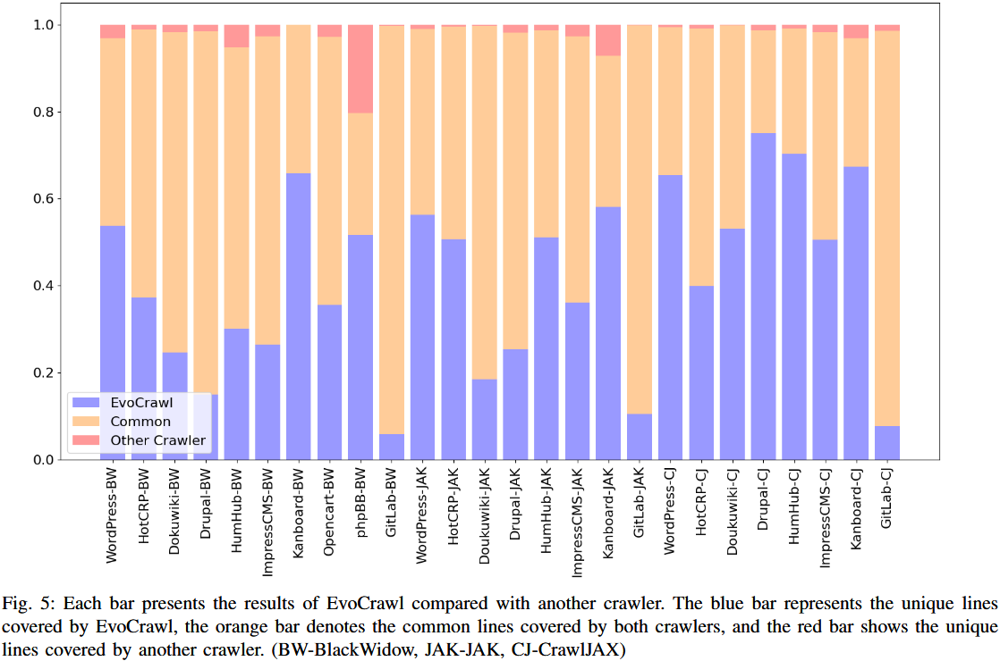
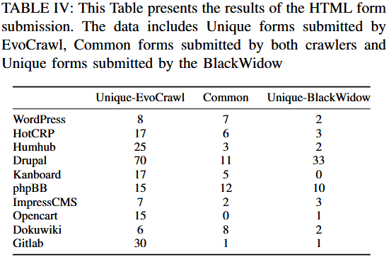
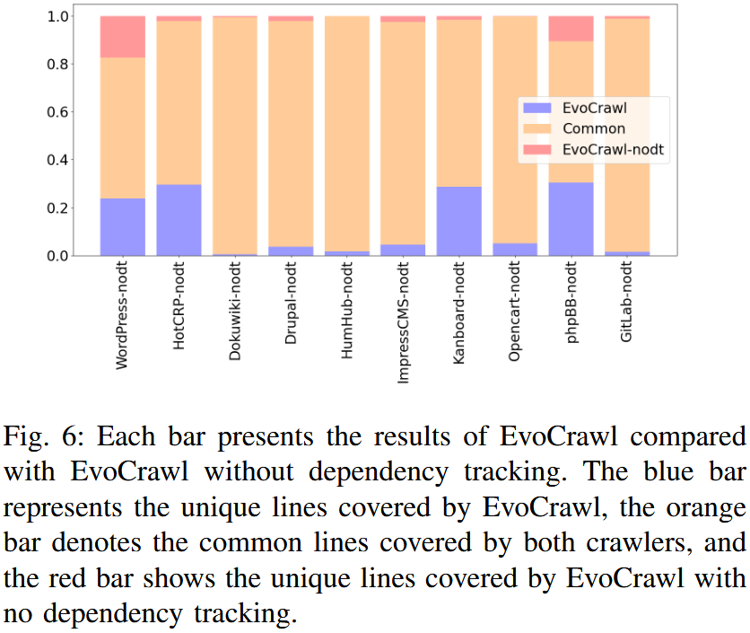
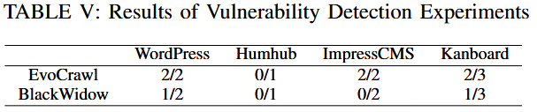
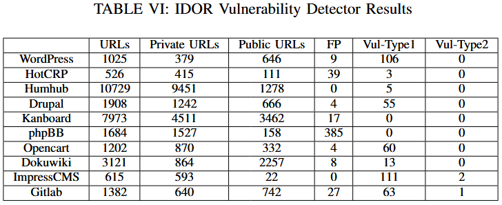

EvoCrawl
EvoCrawl: Exploring Web Application Code and State using Evolutionary Search
Abstract
随着越来越多关键服务迁移到网络上，检测和解决 Web 应用程序中的漏洞变得愈发重要。这些漏洞仅在特定条件下才会出现：一是执行了存在漏洞的代码，二是 Web 应用程序处于所需状态。如果应用程序未处于所需状态，那么即使执行了存在漏洞的代码，漏洞也可能不会被触发。以往的研究通过在提交 HTML 表单前填充每个字段并触发每个 JavaScript 事件来简单地探索应用程序状态。然而，这种简单的方法可能无法满足网页元素之间的约束以及输入格式的约束。为了解决这一问题，我们提出了 EvoCrawl，这是一种使用进化搜索来高效查找不同 Web 交互序列的网络爬虫。EvoCrawl 能够找到可以成功向 Web 应用程序提交输入的序列，因此比以往方法能够探索更多的代码和服务器端状态。为了评估 EvoCrawl 的优势，我们在十个 Web 应用程序上，将其与三种最先进的漏洞扫描器进行了对比评估。我们发现，由于 EvoCrawl 能够执行只有在应用程序处于特定状态时才能执行的代码，所以它实现了更好的代码覆盖率。平均而言，EvoCrawl 的代码覆盖率提高了 59%，并且成功提交 HTML 表单的频率比第二好的工具高出 5 倍。通过集成 IDOR（不安全的直接对象引用）和 XSS（跨站脚本）漏洞扫描器，我们使用 EvoCrawl 在 WordPress、HotCRP、Kanboard、ImpressCMS 和 GitLab 中发现了八个零日 IDOR 和 XSS 漏洞。
1 Introduction & Background
对于 Web 应用漏洞检测，目前主要有静态分析和动态分析两种方法。静态分析工具需要程序的源码，对编程语言强相关且存在路径爆炸和工作量大的问题；动态分析工具与编程语言无关，但需要在探索程序过程中出现漏洞才能检测到，因此需要尽可能多探索程序的状态，即发现更多的攻击面，提高代码覆盖率。
为了探索程序更多的状态，需要正确地向 Web 应用程序提交数据以及其他交互，因此必须满足与 HTML 元素交互的顺序和格式约束，并以正确的顺序触发 JavaScript 事件。
满足顺序约束的序列需要与 HTML 元素和 JavaScript 事件（统称为 Web 元素）的所有可能交互序列进行搜索，而这种搜索空间会随着此类元素和事件数量的增加呈指数级增长。
先前的工作 BlackWidow 和 Enemy of the State 虽然也考虑到以上的 Web 元素，但只是枚举 JS 事件和表单的所有序列，避免了在巨大的空间中搜索，因此导致增加了违反约束的可能性。本文为了解决这个问题设计了EvoCrawl，简单地说:
- EvoCrawl 使用一种带有适应度函数的进化算法，使其能够将搜索重点放在能够成功提交输入或揭示更多可交互 Web 元素的序列上
- 为了进一步缩小搜索空间，EvoCrawl 检测 Web 元素之间的依赖关系，使其能够排除违反这些依赖关系的序列
本文的主要主要贡献有:
- 发现成功且高效地执行客户端事件是 Web 应用程序探索的一个重大障碍，Web 漏洞扫描器需要克服这一障碍，以提高代码覆盖率并发现漏洞
- EvoCrawl 将进化搜索算法与标准爬虫相结合，以更全面地探索 Web 应用程序代码，从而发现漏洞
- 将所有检测模块集成到 EvoCrawl 中，并通过在 10 个 Web 应用程序上与 3 种现代扫描器进行比较。在 10 个目标中识别出了 8 个 0-day 漏洞，平均代码覆盖率比现有工作提高了 59%。
2 Motivation
第一，某些 Web 元素是相互依赖的，如某些元素需要在特定的元素触发后或特定交互后才出现。EvoCrawl 通过跟踪和强制执行依赖关系来找出依赖关系，从而避免尝试不可能的交互序列，以缩小搜索空间。
第二，EvoCrawl 为了高效地搜索剩余空间，我们建议使用进化遗传搜索算法，使用交叉互换生成优秀序列并通过浏览器和数据库的反馈来评估序列。
3 Design

3.1 Page Collection
页面收集模块（PM）的目标是找到可以传递给进化搜索模块（ESM）的 URL。通过识别 Web 元素并与之交互来递归搜索 Web 应用程序。每个触发 DOM 更改的交互称为一个 EVENT。
EVENT 与发现的页面 URL 相关联，使用元组<URL, EVENT>来表示，该元组称为种子。PM 将种子存储在一个队列中，队列中的每一个种子被用来执行链接爬取、事件爬取和表单爬取三个过程。
链接爬取
输入一个种子，访问该种子指定的 URL，如果其中的EVENT值不为空则触发相关的 DOM 事件
如果执行成功，则提取页面中所有的href属性值，构建新的种子。如果新种子不在队列内或之前未被访问过，则添加到队列
事件爬取
PM 与网页中每个可交互元素进行交互，如果 DOM 发送变化，但页面没有刷新或跳转到其他页面，则表示这是一个可以调用 DOM 事件
生成一个新种子，包含当前页面 URL 和 触发事件的 CSS 选择器
PM 不会将事件组合，一个种子只包含一个事件
表单爬取
PM 通过识别 form 标签元素来收集表单。对于每个表单，尝试与表单内的所有元素进行交互，如果在提交前的交互过程中发现 DOM 发生任何变化，将动态捕获并与新元素进行交互
3.2 Evolutionary Search
与传统的遗传算法旨在通过自然选择迭代找到单个最优解不同，EvoCrawl 的目标是探索服务器端状态和揭示应用程序内未见过的链接，以发现尽可能多的相关解
每个页面，ESM 进行多代进化迭代，一次迭代包括序列生成和序列评估两个过程，每一代的序列都是由前几代中获得高适应度分数的序列生成的。
序列生成与评估
一个序列由多个按待定顺序排列的基因组成，每个基因为一个 Web 元素交互对
input-clickinput-typeText输入一个种子，访问该种子指定的 URL，提取页面中所有可交互元素（包括监听 JS 事件的元素、属于 HTML 的元素等），基于这些元素构建基因。为了生成新的序列进行如下操作:
- 随机组合基因
- 已有基因的交叉互换：前一代适应度较高分数的序列进行（前半段和后半段）组合形成新序列
每次交互后，ESM 检测是否跳转到新的 URL 页面，如果是则记录新的 URL 并发送回给 PM，再回到原来的 URL 继续执行下一个基因序列。这样可以确保搜索空间限定在当前页面中，以探索当前也页面产生的更多状态
对于文本输入，ESM 先检查输入标签的
value和placeholder属性，如果存在则输入默认值；如果不存在，则尝试在输入标签所有的属性值中启发式地匹配url或email等关键字，随后生成相应格式的数据依赖跟踪与执行
如果一个基因执行触发了 JS 事件并在页面上显示出新元素，ESM 会推断新元素依赖于该 JS 事件
发现依赖关系后，ESM 使用变异函数在原基因后添加新增的基因。如果出现多个元素，ESM 会随机选择一些新元素添加到事件之后
通过生成事件与元素之间的依赖关系，有利于生成合法的顺序序列，减少搜索空间。虽然会由于页面的不确定性会推断出错误的依赖关系，但是作者发现在实践中这种错误比较少见。
基因消除
每当 ESM 遇到导致跳转到另一个页面的基因时，它会从搜索空间中删除这个基因以及所有包含该基因的序列
一旦删除，该基因将被排除在所有后续序列之外。这样防止重复跳转到新页面，导致搜索中断、效率下降
适应度函数
能够引发 HTML 表单提交或发现新链接的序列是一个好的序列。适应度函数利用浏览器和服务端数据库的反馈，采用启发式的方法来判断序列的好坏
适应度分数代表该序列在下一代产生良好后代的可能性，初始时为每一个序列统一分配一个分数，在执行评估过程中动态更新。引发 HTML 表单提交或在当前 DOM 中引发新元素操作会受到奖励，阻碍元素的操作则会收到惩罚。具体计算公式如下:
\[ f=\sum o_i \cdot w_i \]
\(o_i\)代表目标变量；\(w_i\)表示相关的权重参数，具体设置如下:

奖励在执行过程中其基因触发 JavaScript 事件的序列，显著奖励对成功提交表单的序列，惩罚（降低分数）无法满足字段约束的序列
3.3 Vulnerability Detectors
XSS 漏洞检测
XSS payload: 如果 payload 被执行，该 payload 生成时对应的唯一时间戳会被写入到 HTML 头部全局列表中，通过检查该列表判断是否被执行以及追溯到从哪输入的 payload
- 在 PM，每次提交表单后，使用 XSS payload 替换输入值再次提交
- 在 ESM，直接使用 XSS payload 替换生成的所有文本
该检测方式与 BlackWidow 类似
IDOR（不安全的对象引用）漏洞检测
首先，IVD 使用管理员用户爬取和收集 Web 应用程序内的资源
随后，使用非管理员用户来识别并排除通过 UI 对两种用户类型都可访问的公共资源
最后，评估私有资源（那些非管理员用户通过 UI 无法访问的资源）的访问控制级别，通过使用非管理员用户的凭据直接尝试访问这些私有资源来实现
在重放测试时，对每个私有资源进行三元组测试，userA（管理员权限）、userB（非管理员权限）、userC（与userB同级别的非管理员权限）
重放第一步使用关键字匹配，第二步比较响应
4 Evaluation & Conclusion
评估指标：代码覆盖率、成功提交的表单数量
4.1 Code Coverage

与 BlackWidow 相比，改进幅度在 6% 到 192% 之间。EvoCrawl表现优秀主要是因为:
- 不会花费时间尝试不相关事件的组合
- 对于某些表单是唯一找到正确提交序列的工具
4.2 Form Submissions

EvoCrawl 比 BlackWidow 更能够绕过具有严格约束的可选字段
遗传算法和依赖跟踪功能使 EvoCrawl 能够智能地搜索，在每个页面上花费的时间更少，因此有更多的时间探索其他页面以发现更多的表单
总体而言，EvoCrawl 提交的表单数量多于 BlackWidow，表明 EvoCrawl 的爬取速度和表单提交率比 BlackWidow 更高
4.3 Benefits of Dependency Tracking

对于大多数应用程序，依赖跟踪在很大程度上提高了代码覆盖率。对于 Dokuwiki、Humhub 和 Gitlab 两者的覆盖率结果相似，这是因为这些应用不像其他应用程序那样严重依赖 JS 事件来显示链接或表单，因此效果不明显。
在 phpBB 和 WordPress 中，EvoCrawl-nodt 覆盖了大量 EvoCrawl 未覆盖的代码行，主要是因为两者爬取的页面集不同，后者生成了大量正确的序列放置在队列中，又因为这两个目标应用网页数量多，在24小时内为完成搜索，导致两者的页面集不同。
4.4 Vulnerability Detection
已知 XSS 漏洞检测
选择可复现的、无过滤的、没有被待评估攻击测试的漏洞，将 EvoCrawl 和 BlackWidow 分别运行 24 小时。具体结果如下:

EvoCrawl 的表现均优于 BlackWidow
0-day XSS 漏洞检测
EvoCrawl 在 10 个 Web 应用程序中识别出 5 个 0-day XSS 漏洞:
- 在 WordPress 存在 2 个存储型 XSS 漏洞
- 在 HotCRP 中发现 1 个存储 XSS 漏洞 和 1 个反射型 XSS 漏洞
- 在 Kanboard 中发现 1 个 存型型 XSS 漏洞
- 在 Humhub 出现一个误报（应用的功能需求）
IDOR 漏洞检测
分两类：由站点构建者错误配置或权限设置导致的漏洞（Vul-Type1）、由开发者代码实现不当导致的漏洞（Vul-Type2）。具体结果如下:

重点对于Vul-Type2，在 10 个 Web 应用程序中发现了 3 个漏洞。
4.5 Limitations
适应度函数参数调整
EvoCrawl 需要手动调整适应度函数中的参数
作者未来旨在设计一个能够自主微调这些参数的系统（研究每个参数的影响）
种子选择
不同的 URL 可能指向相同的或高度相似的也页面
EvoCrawl 根据页面的 URL 来选取种子，可能会出现冗余，导致效率下降
作者未来希望尝试多方面来区分不同页面，如 DOM 比较